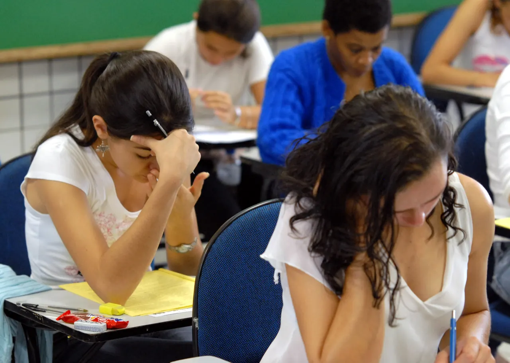

Enem 2026 tem valorização do SUS como tema da redação
Ministro da Educação anunciou a proposta sobre saúde como direito universal; mais de cinco milhões de pessoas estão inscritas.

O que aconteceu
O tema da redação do Exame Nacional do Ensino Médio (Enem) 2026, aplicado neste domingo, 8 de novembro, é “A valorização do Sistema Único de Saúde (SUS) como direito universal”. O ministro da Educação, Leonardo Barchini, divulgou a proposta, confirmada por veículos independentes. O primeiro dia reúne redação, 45 questões de Linguagens e 45 de Ciências Humanas. Segundo o Instituto Nacional de Estudos e Pesquisas Educacionais Anísio Teixeira (Inep), há 5.051.345 inscrições confirmadas. A redação exige um texto dissertativo-argumentativo com defesa de uma tese e proposta de intervenção respeitosa dos direitos humanos. A segunda etapa, com Matemática e Ciências da Natureza, será realizada em 15 de novembro. O anúncio do tema não significa que todos os candidatos já tenham terminado as provas.
Análise do Corvo
A proposta convida os candidatos a refletir sobre a distância entre o direito constitucional à saúde e o atendimento disponível na prática. É possível discutir as desigualdades regionais no acesso a consultas e tratamentos, os desafios de financiamento e gestão, o papel da vacinação e da atenção básica e a importância da prevenção. Reconhecer os resultados positivos do sistema público não impede avaliar criticamente suas limitações. O desempenho na redação depende da coerência argumentativa, da qualidade do repertório e da proposta de intervenção.

Contraponto
Especialistas consideram o tema acessível, mas alertam que elogios genéricos ao SUS não substituem argumentos consistentes. Filas, desigualdades de atendimento e gestão de recursos são questões legítimas de análise. A correção não pressupõe uma orientação político-partidária específica; avalia competências de escrita, argumentação e respeito aos direitos humanos.